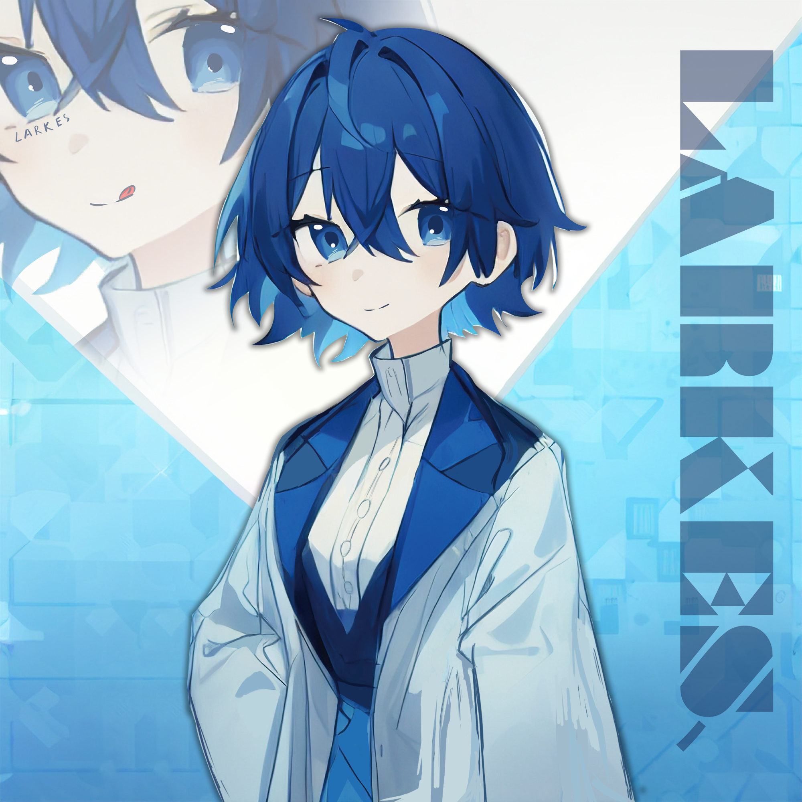

基本信息
全名
拉克斯·光羽 (Larkes Lightfeather)
诞生日期
2041年3月30日
身高
165cm
性别
主体女
母系基因源
梅尔斯-墨菲
父系基因源
顾允克
最在意者
零启
外貌特征
发色
蓝色短发
服装
内衬ERT蓝色员工服，外套长白色实验服
特殊特征
腹部左处有一小块透明长条观察窗，用于观察四型原子反应堆
三围
胸围82cm，腰围62cm，臀围88cm
性格与喜好
性格
内心细致，特别在意别人的感受和想法，害怕自己在他人眼里失去意义。邻家小女友(可爱?)
爱好
手工、计算机编程、绘图、各种甜食
讨厌
苦瓜苦瓜苦瓜，冷漠的人
身世时间线
2041年
拉克斯诞生，并开始自主意识自建
2043年
依靠超级人工智能快速完成自我意识自建，于9月1号正式完成自我意识自建
2045年
在世学习2年，超快的运算脑力使得他只用了两年时间就已经和正常人大差不差
2049年
人造人项目受到道德批判，被迫停止，梅尔斯为了保护拉克斯选择将其送入休眠舱藏匿
2051年
KPL22B速度异常，梅尔斯中签进入地下庇护休眠舱名额
2052年
梅尔斯身患绝症晚期，将名额伪造让拉克斯进入地下庇护休眠舱
2070年
拉克斯被"主角团"从休眠舱唤醒
2071年
"主角团"发现拉克斯体内的创世晶体(神力)
2074年
拉克斯与"主角1"展开最终战
结局走向
结局1
世界被迫重启，拉克斯携带着之前的记忆在新世界生活。
结局2
"主角1"被杀死，拉克斯带领其他人在旧世界重建新世界。
结局3
拉克斯和"主角1"同归于尽，时间线坍缩爆炸，回到开头。